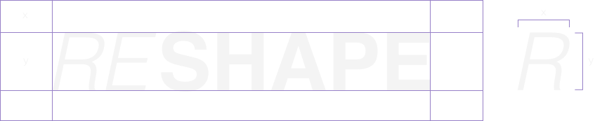
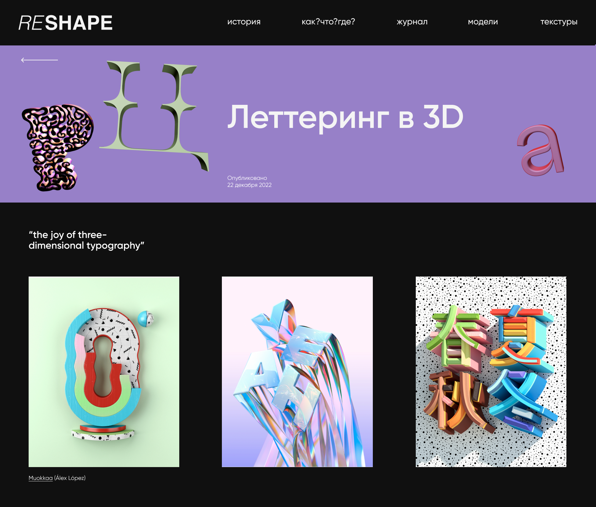

Бренд
Медиа, которое расскажет
как создаётся и применяется
3д графика
молодые
технологичные
креативные
яркие
Ценности
– Успехи в творческой сфере (карьере)
– Лаконичные, понятные для новичков гайды и инструкции
– Повсеместность, внедрение в разные сферы, потому что 3D это круто
Миссия
Помочь дизайнерам начать реализовывать
работы в 3D
Логотип
Наш логотип формируется из двух слов: “reverse”
и “shape”, получая “reshape”. Дословно это значит
«изменение формы», что отражает нашу метафору
перехода из 2D плоскости в 3D.
Охранное поле
Неверное использование
Растягивание логотипа
в высоту и ширину
Поворот логотипа
не по сетке
Изменение заданного
кернинга
Типографика
В логотипе
Сайт
Gilroy
Regular
Аа Бб Вв Гг Дд Ее Ёё Жж Зз Ии
Йй Кк Лл Мм Нн Оо Пп Рр Сс Тт
Уу Фф Хх Цц Чч Шш Щщ Ъъ Ыы
Ьь Ээ Юю Яя
SemiBold
Аа Бб Вв Гг Дд Ее Ёё Жж Зз Ии
Йй Кк Лл Мм Нн Оо Пп Рр Сс Тт
Уу Фф Хх Цц Чч Шш Щщ Ъъ Ыы
Ьь Ээ Юю Яя
Helvetica
Regular
Аа Бб Вв Гг Дд Ее Ёё Жж Зз Ии
Йй Кк Лл Мм Нн Оо Пп Рр Сс Тт
Уу Фф Хх Цц Чч Шш Щщ Ъъ Ыы
Ьь Ээ Юю Яя
Цвета
#F4F4F4
#101010
#9780C8
В проекте используется 3 цвета – белый,
черный и фиолетовый. Выше показано
правильное использование цвета и текста.
Основным цветом фона будет черный,
дополнительным – фиолетовый, который
используется в некоторых страницах
с карточками. Белый цвет используется
только для текста и для заливки карточек
с картинками.
Неверное использование

Сетка
Вариант 1
Применима для страниц с карточками
в четыре колонны.
Вариант 2
Применима для страниц с карточками
в три колонны, лонгридов и статей.

Система
Основными элементами стиля стали наши
авторские 3D модели и их 2D версия.
Чтобы показать нашу метафору перехода
из 2D плоскости в 3D мы разделили экран
на цветную и черно-белую части
и соотвественно заняли их яркими
модельками и контурными изображениями.
Переход должен осуществляться
от 3D к 2D сверху вниз.

3D модельки должны быть разнообразными, но при этом
абстрактными. Достаточно двух элементов с относительно
мелкими деталями (как зелёный цветочек и комочек фольги
на картинке). Объекты также дожны иметь плавную форму
и иметь единую стилистику.
Использование на сайте
На странице выше показано, что цветную стилистику
с 3D можно использовать как дополнительный header
для статей, положив туда тематические модельки
и название.
Tone of voice
Мы помогаем новичкам освоиться в 3D,
поэтому наш язык дружелюбный
и поясняющий.
Обращение к пользователю
на «ты», пояснение терминов,
мотивация.
Носители